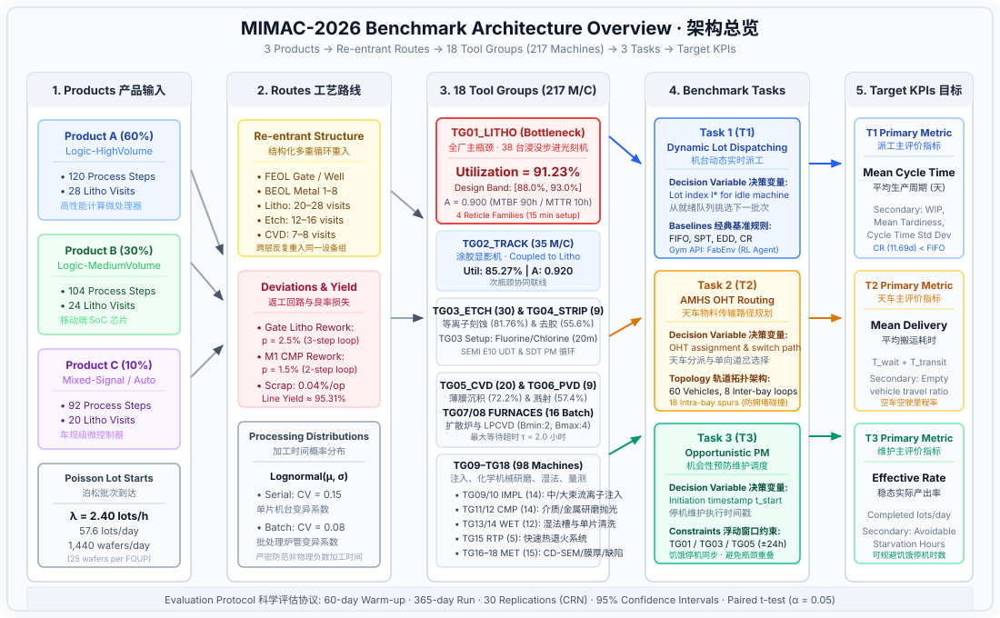

300mm Wafer Fab Scheduling, AMHS Routing, & Maintenance Benchmark • Spec v1.0 300mm 晶圆厂排程、天车物流与设备维护调度基准测试集 • 规范 v1.0
MIMAC-2026 is an open, citable benchmark testbed for 300mm wafer fab scheduling, automated material handling system (AMHS) routing, and preventive-maintenance research. It provides a shared operational baseline for comparing heuristic dispatching rules, mathematical programming solvers, and reinforcement learning agents under realistic cleanroom constraints. MIMAC-2026 is a synthetic, mathematically calibrated model of a modern multi-product logic facility; it is not a digital twin or direct replication of any specific commercial production fab.
MIMAC-2026 是一个面向 300mm 晶圆厂实时排程、自动化物料搬运系统（AMHS）天车路径规划以及预防性维护调度研究的开放、可引用的基准测试平台。它为启发式派工规则、运筹优化求解器和强化学习智能体在严苛洁净室物理约束下的性能比对提供了统一的基准。需要明确的是，MIMAC-2026 是一个经过严密数学标定的合成基准模型，旨在反映现代多产品逻辑晶圆厂的通用运行特征，而非任何真实商业晶圆厂的数字孪生。

| # | Policy策略 | Seed种子 | Mean Cycle Time平均周期 | Mean Tardiness平均拖期 | Throughput吞吐量 | Mean WIP平均在制品 | Bottleneck瓶颈利用率 | Completed完工批次 | Runtime耗时 |
|---|---|---|---|---|---|---|---|---|---|
| No runs in this session yet. Select a dispatching policy above and click "Run simulation". 当前会话暂无运行记录。请在上方选择派工策略并点击"运行仿真"。 | |||||||||
The benchmark models an advanced 300mm front-end and back-end logic manufacturing facility operating continuously 24 hours a day, 7 days a week, 365 days a year. Wafers travel exclusively inside Front Opening Unified Pods (FOUPs) standardizing batch transport at 25 wafers per lot. The complete fab topology comprises 18 tool groups containing exactly 217 production machines. Machine counts, tool categories (serial single-wafer processing vs. multi-lot thermal batching), availability parameters under the SEMI E10 standard, mean time between failures (MTBF), mean time to repair (MTTR), and sequence-dependent setup structures match specification Table 1 exactly.
本基准测试集建模了一座先进的 300mm 前道与后道逻辑芯片制造厂，实行全年 365 天、每周 7 天、每天 24 小时的全天候不间断生产。所有晶圆统一置于标准晶圆盒（FOUP）中流转，搬运批量严格为每批次 25 片（25 wafers/lot）。整座厂房包含 18 个设备组，共计 217 台生产机台。各机台的分类（单片串行处理机台与多批次热处理炉管）、遵循 SEMI E10 标准的可用度参数、平均无故障时间（MTBF）、平均修复时间（MTTR）及顺序相关的换模约束均与规范表 1 保持一致。
| Tool Group ID | Equipment Name | Machine Count ($N_g$) | Tool Class | Batch Size | Availability ($A_g$) | MTBF (h) | MTTR (h) | Setup Family Structure |
|---|---|---|---|---|---|---|---|---|
TG01_LITHO |
Immersion ArF / DUV Scanner | 38 | serial | 1, 1 | 0.900 | 90.0 | 10.0 | Reticle Family (4 families; 15 min setup) |
TG02_TRACK |
Track Coater & Developer | 35 | serial | 1, 1 | 0.920 | 92.0 | 8.0 | None (coupled to litho inline) |
TG03_ETCH |
High-Density Plasma Dry Etcher | 30 | serial | 1, 1 | 0.910 | 91.0 | 9.0 | Chemistry Type (Fluorine / Chlorine; 20 min setup) |
TG04_STRIP |
Plasma Resist Strip & Ashing | 9 | serial | 1, 1 | 0.940 | 141.0 | 9.0 | None |
TG05_CVD |
Dielectric PECVD & ALD | 20 | serial | 1, 1 | 0.910 | 91.0 | 9.0 | Film Type (Oxide / Nitride / Low-k; 30 min clean setup) |
TG06_PVD |
Metal Sputter PVD System | 9 | serial | 1, 1 | 0.920 | 115.0 | 10.0 | Target Material (Cu / Ta / TiN; 25 min clean setup) |
TG07_FURN_DIFF |
Atmospheric Diffusion Furnace | 9 | batch | 2, 4 | 0.920 | 115.0 | 10.0 | Thermal Profile (Drive-in / Oxidation; incompatible recipe) |
TG08_FURN_LPCVD |
Low-Pressure CVD Furnace | 7 | batch | 2, 4 | 0.920 | 115.0 | 10.0 | Tube Gas Family (Poly-Si / Si3N4; incompatible recipe) |
TG09_IMPL_MED |
Medium-Current Ion Implanter | 7 | serial | 1, 1 | 0.900 | 90.0 | 10.0 | Dopant Species (B / P / As; 30 min source change) |
TG10_IMPL_HIGH |
High-Current Ion Implanter | 7 | serial | 1, 1 | 0.900 | 90.0 | 10.0 | Dopant Species (B / P / As; 35 min source change) |
TG11_CMP_OX |
Dielectric ILD/STI CMP Polisher | 7 | serial | 1, 1 | 0.930 | 133.0 | 10.0 | Pad & Slurry Type (Silica / Ceria; 15 min conditioning) |
TG12_CMP_MET |
Metal (W / Cu) CMP Polisher | 7 | serial | 1, 1 | 0.930 | 133.0 | 10.0 | Metal Slurry Type (W slurry / Cu barrier; 20 min flush) |
TG13_WET_BENCH |
Automated Wet Chemical Bench | 5 | batch | 2, 4 | 0.940 | 156.7 | 10.0 | Chemical Bath (RCA-1 / RCA-2 / DHF; incompatible) |
TG14_WET_SINGLE |
Single-Wafer Clean & Dry | 7 | serial | 1, 1 | 0.940 | 156.7 | 10.0 | None |
TG15_RTP |
Rapid Thermal Processing (RTP) | 5 | serial | 1, 1 | 0.930 | 133.0 | 10.0 | Temperature Window (Spike / Soak; 10 min recipe tune) |
TG16_MET_CD |
CD-SEM & Overlay Metrology | 6 | serial | 1, 1 | 0.950 | 190.0 | 10.0 | Recipe alignment (5 min) |
TG17_MET_THICK |
Spectroscopic Ellipsometer | 4 | serial | 1, 1 | 0.950 | 190.0 | 10.0 | Film optical model (5 min) |
TG18_INSPECT |
Darkfield Optical Defect Tool | 5 | serial | 1, 1 | 0.950 | 190.0 | 10.0 | Inspection threshold profile (5 min) |
| Total | 18 Tool Groups | 217 | — | |||||
The production schedule concurrently balances three distinct product
flows: Product A (Logic-HighVolume) represents high-performance
computing microprocessors, accounting for 60% of starts across a
120-operation route requiring 28 lithography visits; Product B
(Logic-MediumVolume) represents mobile applications processors,
accounting for 30% of starts across a 104-operation route requiring 24
visits; and Product C (mixed-signal/automotive) represents embedded
microcontrollers, accounting for 10% of starts across a 92-operation
route requiring 20 visits. All product routes exhibit severe
structural re-entrancy, repeatedly cycling lots back through
photolithography (TG01_LITHO), dry etch
(TG03_ETCH), and chemical vapor deposition
(TG05_CVD) as successive dielectric, metal, and
interconnect layers are built up.
该晶圆厂在生产中同步混合投产三种芯片产品：产品
A（Logic-HighVolume）对标高性能计算处理器，占投产总量的
60%，工艺路线包含 120 道工序，需经历 28 次光刻循环；产品
B（Logic-MediumVolume）对标移动终端系统级芯片（SoC），占投产总量的
30%，路线包含 104 道工序，需经历 24 次光刻循环；产品
C（混合信号/汽车电子）对标车规级微控制器，占投产总量的 10%，路线包含
92 道工序，需经历 20
次光刻循环。所有产品的加工流程均呈现高度的重入特性（re-entrant
routes），即晶圆批次在沉积、光刻与刻蚀各层结构时，会反复回到
TG01_LITHO、TG03_ETCH 与
TG05_CVD 等核心机台组执行加工。
Lots enter the fab according to a stationary Poisson process with an
arrival rate of λ = 2.40 lots/hour, corresponding to 57.6
lots/day or 1,440 wafers/day. The global bottleneck of the facility is
photolithography (TG01_LITHO, 38 scanners), engineered to
operate at exactly 91.23% stationary utilization within the required
88%–93% design band. The stationary utilization formula is defined as
arrival rate multiplied by workload per lot divided by effective
machine capacity.
晶圆批次按齐次泊松过程到达厂房，投产速率设定为 λ = 2.40
批/小时（折合 57.6 批/天，即 1,440
片晶圆/天）。全厂的容量主瓶颈被明确设定为光刻机台组（TG01_LITHO，共
38 台步进光刻机），其稳定利用率被精确标定在 91.23%，处于规范要求的
88%–93%
稳态负荷区间内。利用率计算公式遵循基础排队论定义：到达率乘以每批晶圆在机台组上的平均负荷时间除以机台组的有效综合产能（U = λ · W / C）。
MIMAC-2026 formalizes three operational tasks spanning machine-level scheduling, inter-bay transport logistics, and asset health management:
TG01_LITHO, TG03_ETCH, and
TG05_CVD must be executed within a floating window of
±24 hours around nominal target deadlines. The decision
variable is the initiation timestamp for tool PM, and the primary
evaluation metric is effective production rate.
MIMAC-2026 规范了半导体制造运行的三个核心基准任务，覆盖机台级派工、跨工区物流与设备资产维护：
TG01_LITHO、TG03_ETCH 与
TG05_CVD 的周期性维护，允许在到期时间前后 ±24
小时浮动窗口内灵活安排。决策变量为机台维护停机启动的具体时间戳，主评价指标为有效生产产出率（Effective
Production Rate）。
The benchmark provides baseline implementations of standard classical dispatching heuristics: First-In, First-Out (FIFO), Shortest Processing Time (SPT), Earliest Due Date (EDD), and Critical Ratio (CR). All four behavioral sanity gates specified in spec §6 passed: bottleneck scanner utilization was measured at 88.30% (strictly inside [88%, 93%]); fab WIP grew by +32.3% under a +8% arrival rate surge; due-date policy superiority was verified with Critical Ratio cycle time (11.69 d) outperforming FIFO (17.46 d); and the simulation completed without deadlocks. The table below lists baseline performance metrics, labeled as preliminary based on 5 replications; the formal evaluation protocol calls for 30 replications.
基准测试集内置了四种经典工业派工规则：先进先出（FIFO）、最短加工时间优先（SPT）、最早交期优先（EDD）以及关键比率优先（CR）。模拟器已全项通过规范第 6 节规定的 4 项行为合理性检验门禁：光刻瓶颈机台实测利用率为 88.30%（落在 [88%, 93%] 理论区间内）；在投产流量提升 +8% 时在制品（WIP）增长 +32.3%；关键比率规则的周期时间（11.69 天）显著优于先进先出规则（17.46 天）；仿真在多随机种子下连续运行无死锁。下表列出各规则性能数据，需特别标明此为 5 次重复运行下的初步结果；完整评估协议要求进行 30 次独立重复。
| Baseline | Reps | Mean cycle time | 95% CI | Mean tardiness | Bottleneck util | Throughput | Mean WIP |
|---|---|---|---|---|---|---|---|
| FIFO | 5 (Preliminary) | 17.46 d | ±0.68 | 10.38 d | 88.3% ±0.2% | 964 wafers/day | 969.6 lots |
| SPT | 5 (Preliminary) | 17.46 d | ±0.68 | 10.38 d | 88.3% ±0.2% | 964 wafers/day | 969.6 lots |
| EDD | 5 (Preliminary) | 12.52 d | ±0.60 | 5.44 d | 87.8% ±0.4% | 1134 wafers/day | 722.3 lots |
| CR | 5 (Preliminary) | 11.69 d | ±0.32 | 4.60 d | 88.0% ±0.1% | 1158 wafers/day | 669.6 lots |
To guarantee scientific reproducibility when evaluating novel scheduling or reinforcement learning policies against the baselines, researchers must follow the formal evaluation protocol: a 60-day warm-up period to stabilize fab inventory, followed by a 365-day performance measurement run. Experiments require 30 independent replications executed under Common Random Numbers (CRN) across compared policies, reporting 95% confidence intervals and evaluating statistical significance via paired Student's t-tests at α = 0.05.
为确保研究人员在比对新型调度算法或强化学习模型时具备统计可信度与科学复现性，基准评测必须遵循严谨的统计评估协议：设置 60 天预热期（warm-up period）以消除初态偏差使在制品库存趋于平稳，随后进行 365 天的数据采集运行。正式实验须采用 30 次独立随机种子重复，且在所有对照算法间采用公共随机数（Common Random Numbers, CRN）机制，最终报告 95% 置信区间，并在显著性水平 α = 0.05 下进行配对 t 检验。
Researchers can execute the benchmark locally using standard Python
tools. Install the core simulation engine via
pip install simpy and launch a 365-day experiment by
executing
python run_benchmark.py --policy fifo --days 365. For
reinforcement learning studies, the package provides a standard
Gymnasium API via FabEnv (spec §7), supporting
state-space observation vectors and action spaces for neural network
training. Download artifacts are accessible via the simulator package
(/downloads/mimac2026-simulator.zip), the technical specification (/MIMAC-2026-SPEC-v1.0.md), and the process route data (/benchmark/routes.json).
研究人员可通过标准 Python 环境在本地快速运行该基准。通过
pip install simpy 安装依赖后，执行
python run_benchmark.py --policy fifo --days 365
即可启动为期 365 天的基准实验。对于强化学习领域的探索，代码包在
FabEnv 类中提供了符合 Gymnasium
规范的标准交互接口（参考规范第 7
节），提供结构化的状态向量与动作空间供智能体训练。测试集核心资源链接包括仿真器源码包（/downloads/mimac2026-simulator.zip）、技术规范正文（/MIMAC-2026-SPEC-v1.0.md）以及完整工艺路线文件（/benchmark/routes.json）。
# Quickstart CLI
pip install simpy gymnasium
python run_benchmark.py --policy fifo --days 365Academic and industrial users should consider three explicit limitations: First, all parameters are synthetic engineering approximations calibrated to represent modern 300mm manufacturing dynamics rather than measured field data from an active foundry (see spec §9 parameter provenance registry). Second, while simulator architecture supports T2 (AMHS routing) and T3 (opportunistic PM), published baseline tables are currently limited to Task 1 dispatching rules; multi-task benchmarks will be released in future updates. Third, the numerical results shown in Section 6 reflect a 5-replication preliminary evaluation rather than the 30-replication protocol required for definitive publication.
使用本基准测试集的学术界与工业界同仁须注意以下三点明确限制：第一，所有模型参数均为经过系统化标定的合成工程近似值，用以模拟 300mm 晶圆厂的真实动态，并不直接对应任何实际代工厂的实测遥测数据（详见规范第 9 节参数出处注册表）。第二，虽然仿真器底层架构已支持 T2（天车调度）与 T3（机会性维护）任务，但目前公开发布的基线结果表仅覆盖 T1 派工规则，多任务基线数据将在后续版本发布。第三，第 6 节中展示的数值结果仅为 5 次重复运行的初步数据，尚未达到正式科学出版所需的 30 次完整评估要求。
When utilizing MIMAC-2026 in published scientific literature or industrial benchmarks, please cite the official technical report:
@techreport{semiconfab2026mimac,
author = {{SemiconFab Benchmarking Consortium}},
title = {MIMAC-2026: An Open Benchmark Testbed for 300mm Wafer Fab Scheduling, AMHS Routing, and Predictive Maintenance},
institution = {SemiconFab Consortium},
number = {SF-TR-2026-01},
year = {2026},
version = {1.0}
}Downloadable benchmark assets:
在学术论文或技术报告中引用 MIMAC-2026 时，请采用上述 BibTeX 条目。官方数据与代码包下载链接同上。
Looking for real equipment data? Browse the open equipment catalog →
想找真实设备数据？浏览开放设备目录 →